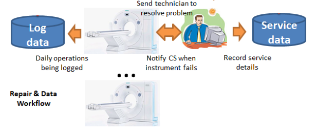
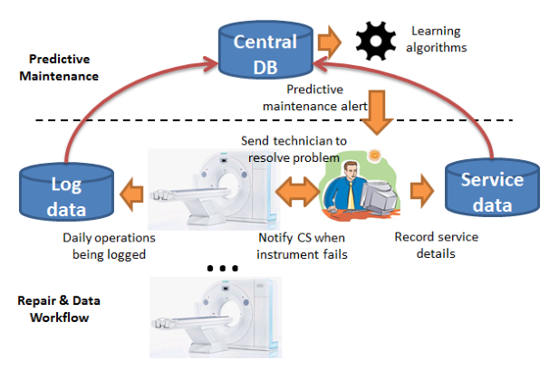

Log-based Predictive Maintenance
published in SIGKDD 2014
Ruben Sipos, Fabian Moerchen, Dmitriy Fradkin, Zhuang Wang
Presented by: Tristan Bendixen
Agenda
- Problem
- Solution
- Experiments
- Conclusion
- Evaluation
The Problem
- Medical equipment failures can be expensive, especially with downtime.
- Maintenance cycles do not always work "well enough".
Maintenance Flow Analysis

Log Data
- Hardware is mostly software-operated
- Software logs everything the developer found useful (at least)
- Technicians log everything about their visits
Their Goal
To predict failures and schedule maintenance proactively to limit the
amount of downtime, using the aforementioned log data
Requirements
- Should predict within predictive interval
- Must not use data from infected interval
-
Model must be ...
- flexible
- interpretable
- efficient
- resilient to class imbalance
Methodology: MIL
- Multi-Instance Learning
- Instances grouped in labeled bags
- Not all log entries will carry error markers, but some will
- Task is to correctly label a bag, not individual instances
Training
- Bag size likely determined by predictive interval
- Multiple examples from bags without incidents
- Averaged meta-example from bag with incident(s)
- L1-regularized SVM optimization problem with user-specified regularization parameter
Prediction
- Runs on a single instance
- Checked against a threshold
- Taken into account during testing
Feature Selection
- Cherry-picked features from logs
- Bootstrapped feature selection
- Trains multiple models using all marked bags and a random subset of unmarked bags
- Runs multiple times, calculating weights
- Selects strongest features ranked by summed weights
Experiments
- Two equipment models
- Parameters decided with domain experts
- Positive bags from -7 days to -1 day from known failures
- Negative bags from ~20% of remaining, weekly intervals
Experiment Datasets
| C |
A |
Number of ... |
| 16389 |
75552 |
instances |
| 3073 |
11238 |
features |
| 88 |
108 |
known failures |
| 6664 |
14367 |
bags |
Experiments Summary
- Compared their algorithm to four others
- Tested against multiple weight sum thresholds
- 300-400 features performed best
- At 70% precision, 25% and 80% of failures in C and A were caught respectively
- Smaller models are still interesting
Conclusion
- Best on the market because no competitors exist(ed)
- Better solution than other possible methods
- Deployed by major medical equipment provider

Evaluation
The good
- Interesting approach to the issue
- Led me to other interesting articles
The not-so-good
- No examples and many knowledge assumptions
- A LOT of typos
Relevance to Our Project
We are working with logs and fault detection.
Interesting approach that should probably be explored in depth.
Have tried something akin to it, but not exactly this.